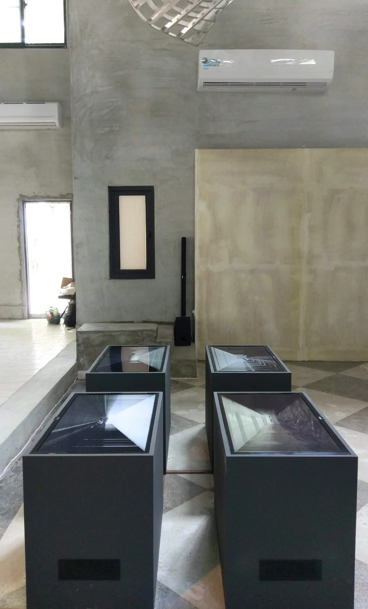
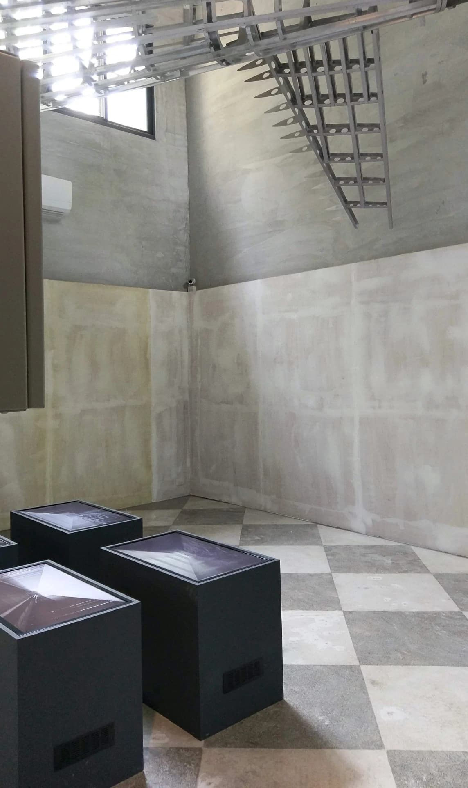
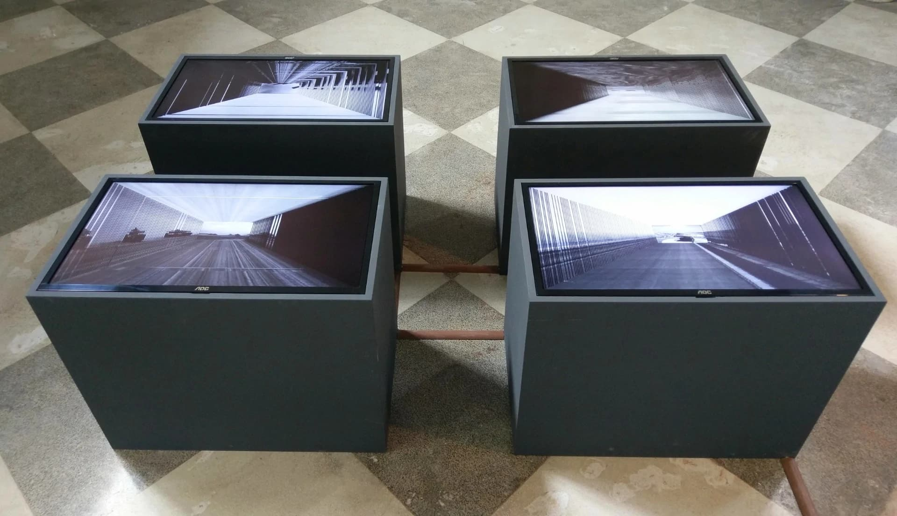

×
Video installation, 4 screens, sound • 2020



I captured the battle preparation picture of Taiwan after World War II, shrink the picture one layer at a time towards the center, inlay the original picture, leaving an outer circle that cannot be covered, shrink dozens of layers (decades), the picture shrinks (and Years) continue to stack traces of layers, and these traces (and residues) are again the other and the object, placed in the periphery. The picture forms a static, framed painting. But the center of screen will move again at any time. The metaphor of the artwork is deeply buried in the tension of time.